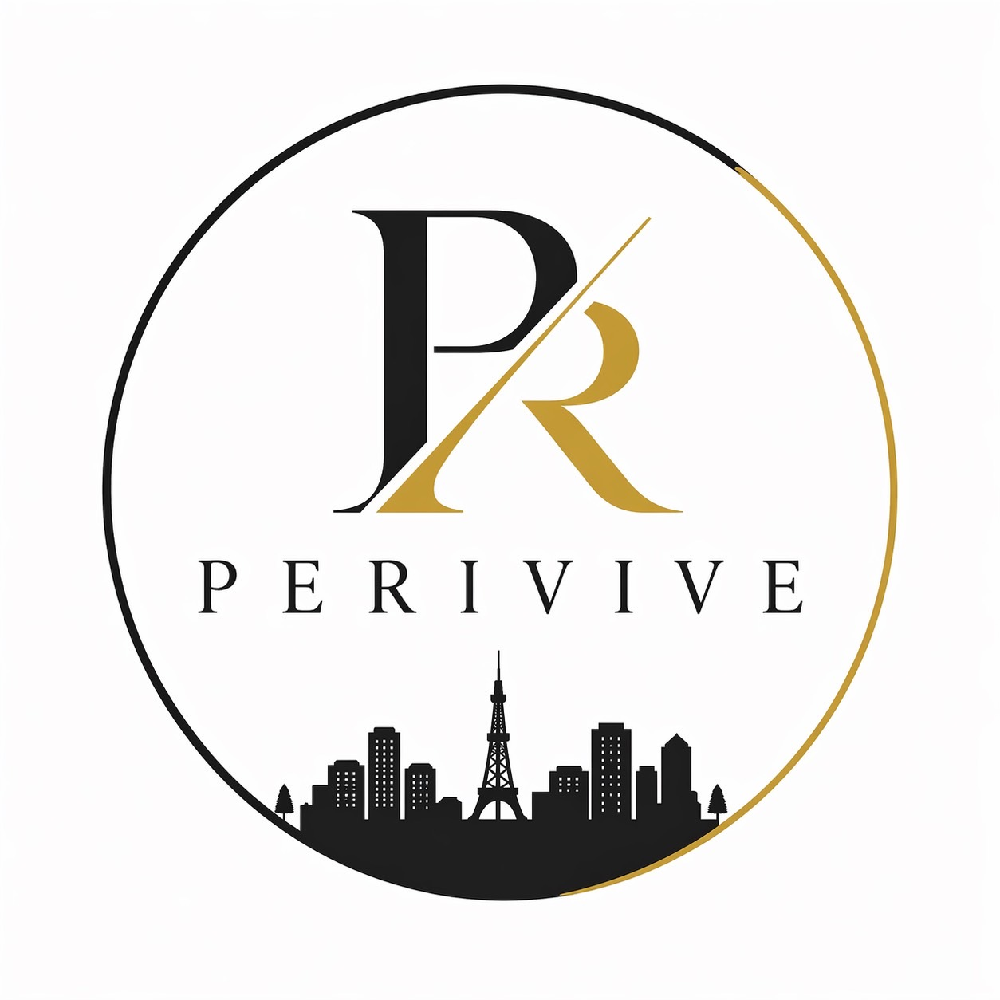

仲介手数料無料
対象物件は仲介手数料を無料でご案内。初期費用を抑えたい方に、無理のない選択肢を提案します。

PERIVIVE
SCROLL余計な費用を抑えながら、納得できる住まい選びへ。 PERIVIVEは、不動産仲介をもっと相談しやすく、透明にすることを大切にしています。
対応内容を見るStrength
物件選びで悩みやすい「初期費用」「相談時間」「判断材料」を、シンプルに整理します。
対象物件は仲介手数料を無料でご案内。初期費用を抑えたい方に、無理のない選択肢を提案します。
日中に時間を取りづらい方も、事前予約で夜の相談に対応。仕事終わりでも進めやすい体制です。
希望条件の整理、物件比較、内見、契約手続きまで、不動産仲介の実務を一貫してサポートします。
Service
気になる物件をただ紹介するだけでなく、費用感、生活動線、契約条件まで見比べながら、 納得して選べる状態をつくります。
Flow
エリア、予算、入居時期、譲れない条件を整理します。
候補物件を費用や暮らしやすさの観点で見比べます。
内見調整から申込条件の確認までスムーズに進行します。
重要事項や契約書類を確認し、入居まで伴走します。
Contact
公式LINEとInstagramの導線を用意しています。URLが決まり次第、下の枠に追加できます。
Profile